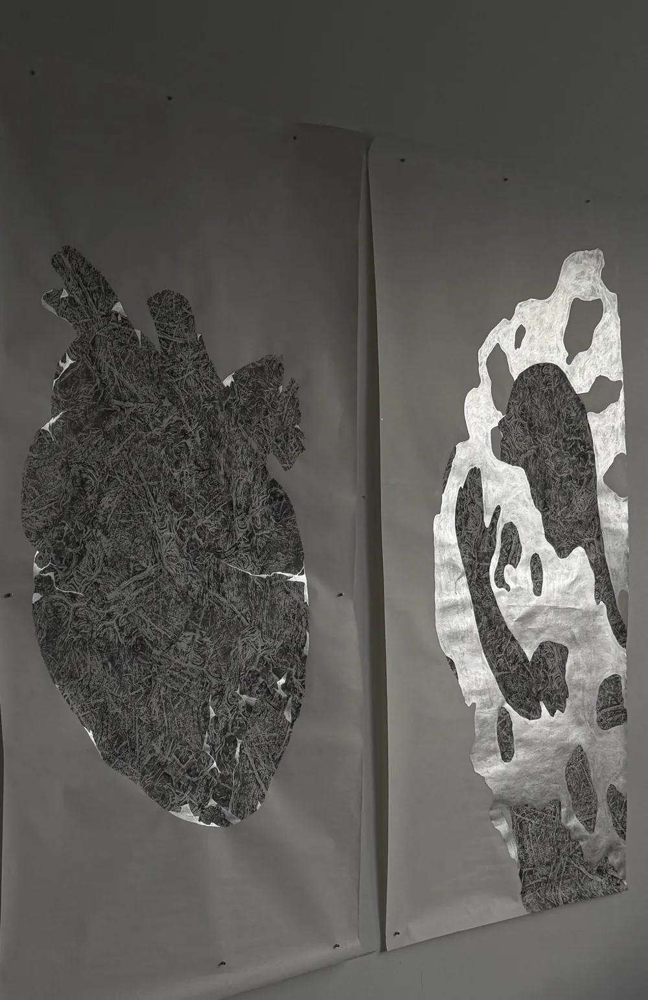

The Perfect Flaws完美的瑕疵
Wandering through my father’s collection feels like walking through a forest of stone. The smell in the air is special to me. Gradually, I fell in love with these stones of all forms. Some are unyielding and resilient, others smooth and gentle like water. Some seem to be as light as drifting clouds, while others are dark and dense like sumi ink. They all look so different and all seem to have been through a lot. The holes, the edges and the fractures are showing the work of time. All those things that seem to be the flaws have become the beauty in one’s eye. Man says it’s the flaws that make it so perfect.漫步在父亲的藏石之间,就像走进一片石头的森林。空气里的气味对我来说很特别。渐渐地,我爱上了这些形态各异的石头。有的坚硬刚毅,有的如水般光滑温润;有的轻盈得像飘浮的云,有的又像墨一样浓黑厚重。它们模样各不相同,却似乎都经历过许多。孔洞、棱角与裂痕,都显示着时间的功夫。那些看似瑕疵的地方,在人的眼中都成了美。人们说,正是瑕疵让它如此完美。
Learning stone rubbing has been life changing for me. I start to have a more intimate connection with those stones. I love to feel how the temperature change in my hands and feel the shape of them, harsh or smooth, sharp or rounded. The most intriguing part is getting those intricate and elusive patterns with the rubbing technique. In my time I spent with them, I saw the vastness of the universe and, through that, I caught a glimpse of my own soul.学习拓印改变了我的生活。我开始与那些石头有了更亲密的联结。我喜欢感受它们在手中温度的变化,感受它们的形状——粗粝或光滑,尖锐或圆润。最迷人的部分,是用拓印的技法把那些繁复而难以捉摸的纹理留下来。在与它们相处的时光里,我看见了宇宙的浩瀚,也由此瞥见了自己的灵魂。
Stone rubbing is spiritual practice for me. It is a process that requires a lot of time and patience. I see myself talking to the stone, touching the stone, rubbing the stone and somehow becoming a part of the stone. Feeling the stone from its shape to the most finest texture is so calming and relaxing. And I want you to feel it too.拓印对我而言是一种精神修行。这个过程需要大量的时间与耐心。我看见自己与石头说话、触摸石头、拓印石头,并在某种程度上成为石头的一部分。从形状到最细微的纹理去感受一块石头,让人如此平静、放松。我也希望你能感受到。
I want to bring my vision of the spirit of stone through stone rubbing and recreation. Using the flaws to create as a gesture of acceptance.我想通过拓印与再创作,呈现我所理解的石之精神——以瑕疵来创作,作为一种接纳的姿态。